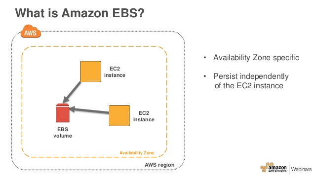

Create the EFS and mount it into EC2 instance

Step 1: Now we are going to create a Network File System using AWS EFS and will store the files in the EFS. So first we will create an Amazon EFS file system, launch a Linux virtual machine on Amazon EC2, mount the file system, create a files. Click to open the EFS in the AWS Management Console.

Step 2: In the Amazon EFS console, click Create file system.

Step 3: Choose the VPC,subnets and security group to configure file system access and click Next Step.

Step 4: Click Next Step.

Step 5: Configure optional settings and click Next Step.

Step 6: I kept all are as default. Click Next Step.

Step 7: Review and create and click Create File System.

Step 8: Now we can see the below file system has been created.

Step 9: To access your file system, you mount the file system using the standard Linux mount command and the file system’s DNS name. Once you’ve mounted, you can work with the files and directories in your file system just like you would with a local file system. Amazon EFS uses the NFSv4.1 protocol. So click the Amazon EC2 mount instructions(from loacl VPC) and followup the instructions.

Step 10: As of now there is no drive attached in the instance as per the below screenshot.From the Amazon EC2 mount instructions window you can read through the Setting up your EC2 instance section. This section walks you through the steps to install the nfs client onto your EC2 instance. The nfs client is already installed on the EC2 instance you launched so you can move down to the next step

Step 11: Create a directory directory on your instance.

Step 12: To mount the above the file systems, Run the below commands as per the instructions.

Step 13: See the below file system has been created successfully by running the above command. so you can verify it by create a test file in your new file system.

Create the EBS Volume and mount it into EC2 instance
{kind=link}
Step 1: Click the Volume on EC2 Console to create a volume.

Step 2: Click Create Volume.

Step 3: Choose the Volume Type and allocate the volume Size and give the Tags as Dev. Click Create Volume.


Step 4: You can see the below EBS volume has been created. So select the volume and go to actions and attach to your EC2 instance.

Step 5: After attached your EBS volume to your instance you can see the volume as xvdf in your EC2.
Note: Before formating your volume you need to check if the volume has any data using the following command,
sudo file -s /dev/xvdf
If the above command output shows “/dev/xvdf: data”, it means your volume is empty.

Step 6: Now Format the volume to ext4 file system using the following command,
sudo mkfs -t ext4 /dev/xvdf.

Step 7: Create a directory of your choice to mount our new ext4 volume in your instance. I am using the name “data”
sudo mkdir /data
Now mounted your volume to data drive using following commands
sudo mount /dev/xvdf /newvolume/
.

Step 8: Now See below volume has been attached successfully in your EC2 instance.

EBS Automount On Reboot
Step 9: By default on every reboot the EBS volumes other than root volume will get unmounted. To enable automount, you need to make an entry in the /etc/fstab file. Open /etc/fstab file and make an entry in the following format

Step 10: Once added the entry you can reboot your instance and make sure your volume should be mounted in your EC2 instance.